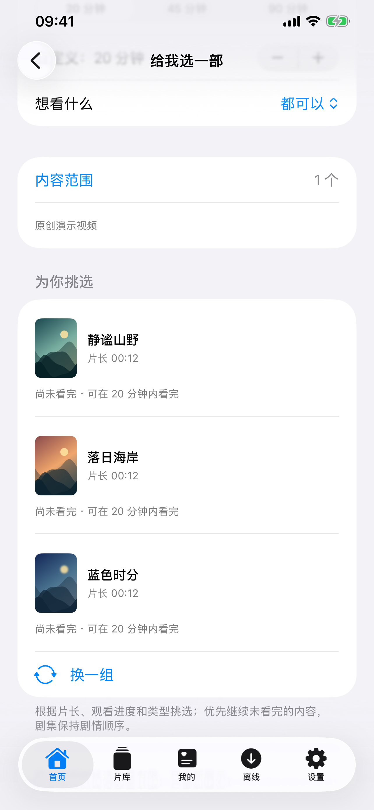
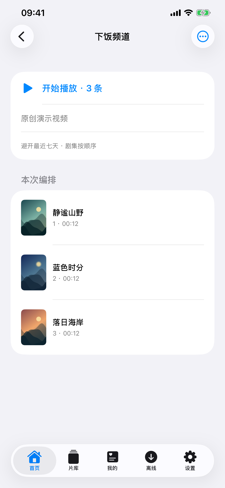
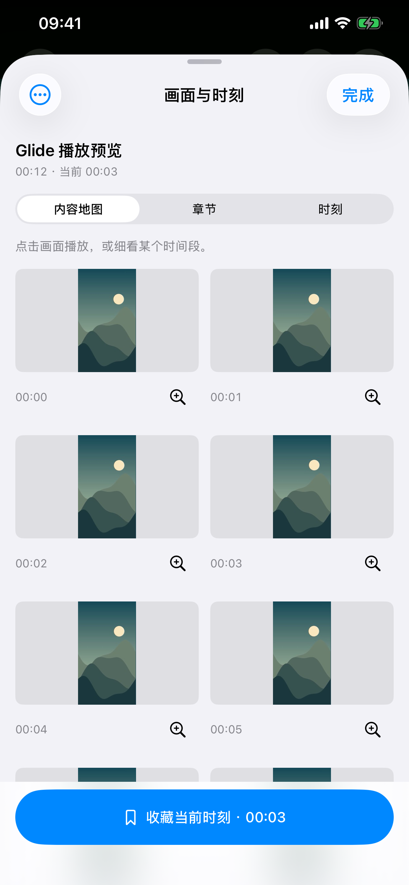
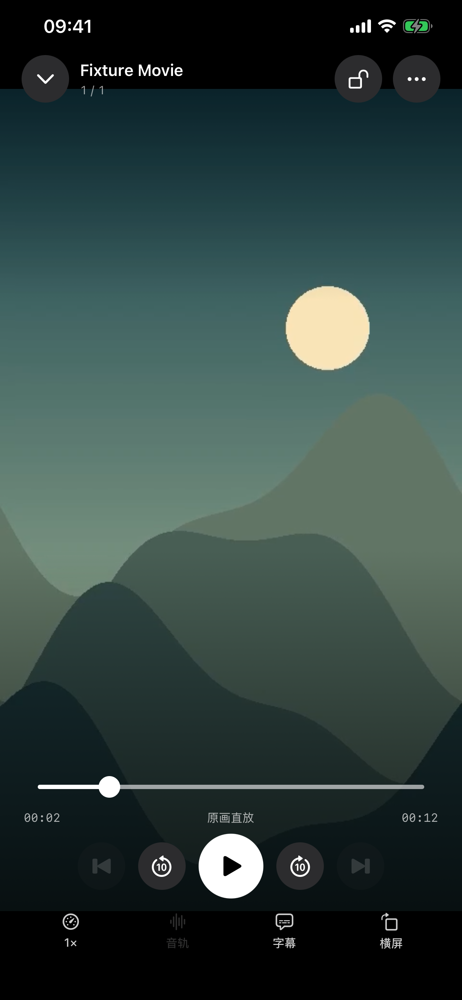

本地与离线
导入视频，或授权访问原目录。管理离线下载，在没有网络时继续看。
商店版已支持从硬盘里的日常，到服务器上的珍藏。
用熟悉的原生体验，回到每一次观看。
商店版 1.4.0 · iPhone 与 iPad · iOS 17 或更高版本
为 iPhone 与 iPad 而做
本地、媒体服务器与 NAS
媒体直连你的来源
少一点挑选，多一点观看
开发版正在让片库更好用。按可用时间选片，把喜欢的内容编成频道，或直接从画面找回某个片段。
开发版以下展示截至 1.11.0 的能力，部分功能尚未上架。查看版本区别
选一个时间，把挑片交给 Glide。根据片长与剩余观看时间，从你选定的范围里找到少量候选，并告诉你选择的理由。

电影、剧集、家庭视频目录，可以来自不同来源。把它们加入一个频道，打开就能接着看，剧集仍按季集顺序播放。

展开视频内容地图，按缩略图浏览，细看某段时间，点一下就从那里播放。把喜欢的位置存成时刻，下次直接回来。
地图支持系统可解码的本地与离线视频，以及已生成 Trickplay 的 Jellyfin 视频；其他来源按能力提供章节与时刻。
1.11.0 开发版新增
播放器的本分
清楚的媒体信息，顺手的播放控制。系统播放与兼容内核各尽所长，音轨、字幕和观看节奏，都由你选择。
格式支持取决于设备、文件与服务器。原字体需要实际提供；外部字幕层不随 PiP／AirPlay 输出。

你的媒体，不必搬家
视频可以留在原来的地方。Glide 连接你选择的来源，不提供影视片源，也不要求把片库上传到 Glide。
导入视频，或授权访问原目录。管理离线下载，在没有网络时继续看。
商店版已支持连接自己的媒体服务器，浏览片库、剧集与媒体信息，继续上次的播放进度。
Jellyfin 已上架 · Emby 为开发版直连家中的 NAS。浏览目录、读取封面；开发版可匹配同名外挂字幕，保持源文件只读。
WebDAV 已上架 · SMB 为开发版打开有访问权限的 HTTP(S) 视频地址，或导入 STRM 链接文件，集中管理播放入口。
开发版新增持续打磨，清楚交代
紧凑片库、结构化媒体信息、竖版家庭视频预览和更直接的播放操作。
下载商店版内容地图、章节与时刻收藏，原样 ASS 渲染；此前加入 SMB、Emby、私人频道与按时间选片。
查看完整更新记录开发预览已实现的功能会在后续商店更新中逐步提供。下载按钮始终前往 App Store，当前没有公开测试版下载入口。
不提供。Glide 是播放器，你需要自行导入有权访问的视频，或连接自己的媒体服务器与 NAS。
App Store 公开版本目前为 1.4.0。页面中标注“开发版”的功能属于当前 1.11.0 开发能力，尚未全部上架。请以商店更新说明和应用版本为准。
播放结果与容器、编码、设备和服务器有关。Glide 提供系统与兼容播放路线；媒体服务器也可能需要转码权限与处理能力。详情见播放帮助。
提供应用版本、设备和复现步骤；播放问题可在预览后分享应用内的脱敏诊断。无需发送密码、令牌、完整服务器地址或原视频。前往支持页面。
iPhone 与 iPad · App Store 1.4.0